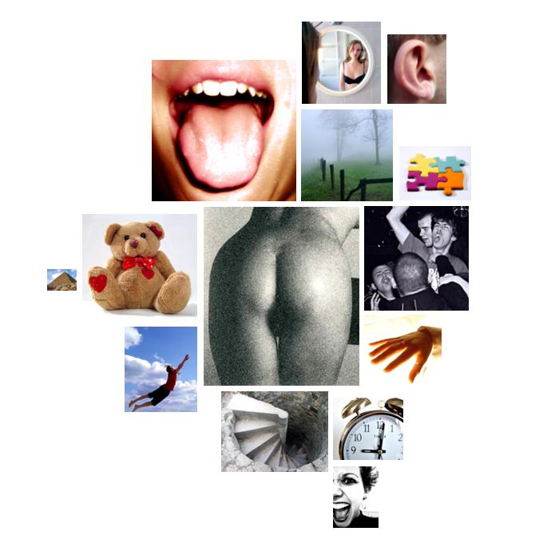

gore.txt
  anality
anality pollution, polluters
 taste
taste source, sources
 affection
affection friends, grateful, beloved, love, affects, affects, friend, devoted, like, mate, friends, friends, love, like, friend
 chaos
chaos chance, confusing
 depth
depth under, deeply, deeply, deep, deep
 diffusion
diffusion mistakes, mistakes
 narcissism
narcissism heart, face, faces, face, headed, headed, heart, hearts, hearts
 descent
descent fellow, fellow, divert, fellow
 touch
touch touch
 temporal_references
temporal_references week, old, then, tonight, past, every, years, ago, moment, year's, years, ago, every, every, time, every, now, years, ago, today, now, while, time, tonight, now, again, when, when, week, present, years, ago, time, when, time, then, when, tonight, years, ago, years, again, again
 sound
sound heart, ring, heart, hearts, hearts
 abstraction
abstraction different, circumstances, know, think, know, think, important, sure, sure, choice, true, example, history, know, true, true, real, solutions, reason, why, believe, believe, difference, basic, problems, opinion, real, real, source, believe, them, mistakes, them, mistakes, believe, sources, thoughtful, plan, know, truly, them, them, them, them, them, meant, believing, may
 anxiety
anxiety troubled, worried, crisis, trouble, terrorists, terrorism, afraid, terrorist
 timelessness
timelessness forever